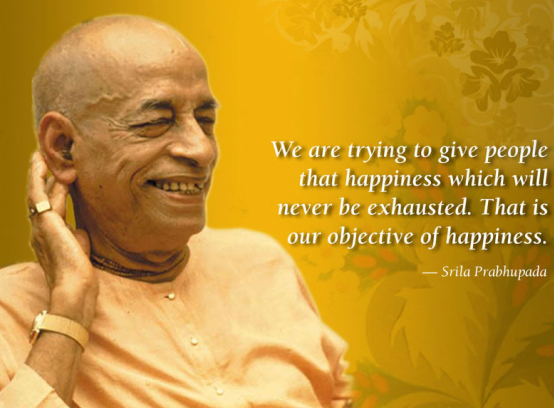

<section class="about-parbhupad">

  <div class="container">
    <div class="d-lg-flex justify-content-between custom-margin align-items-center">
      <div class="parbhupad-img mb-3 mb-lg-0">
        
      </div>


      <div class="text-parbhupad">
        <h5> His Divine Grace A.C. Bhaktivedanta Swami, Srila Prabhupada</h5>
        <p>On the nineteenth of September 1965, a cargo ship “Jaladuta” sailed into New York Harbor and docked at a
          Brooklyn pier, at Seventeenth Street. An old Vaishnava sannyasi dressed in a simple cotton dhoti, old shawl,
          neck beads, having a golden complexion with a shaven head and sikha got down from that ship. It was Srila
          Prabhupada. He had a sponsor, Mr. Agarwal, somewhere in Pennsylvania. Although he had little idea of what to
          do as he walked off the ship onto the pier—“I did not know whether to turn left or right”— he came to spread
          the message of Lord Chaitanya in the western world on the order of his spiritual master. Thus began a
          spiritual revolution flooding the world with the chanting of Hare Krishna Mahamantra.</p>
        <p>In the world history major changes took place because of a few people who actually lived by their ideals.
          Srila Prabhupada was one such person. A Holy man creates Holy places wherever he visits. Srila Prabhupada
          confirmed this statement in the modern times, especially in the western countries, where no one had ever heard
          of Lord Krishna before his arrival at New York.</p>
      </div>
    </div>


    <div class="d-lg-flex justify-content-between flex-direction align-items-center">
      <div class="parbhupad-img mb-3 mb-lg-0">
        
      </div>


      <div class="text-parbhupad">
        <p>His Divine Grace, A.C. Bhaktivedanta Swami Prabhupada (1896-1977) is widely regarded as the world’s
          pre-eminent exponent of the teachings and practices of Bhakti-yoga to the Western world. After months of
          lonely hardship and struggle in America, in July of 1966, Bhaktivedanta Swami established the International
          Society for Krishna Consciousness for the purpose of checking the imbalance of values in the world and working
          for real unity and peace.</p>
        <p>Srila Prabhupada taught that each soul is part and parcel of God and that one could find true happiness
          through living a simpler, more natural way of life and dedicating one’s energy in the service of God and all
          living beings.</p>
        <p>In the eleven years that followed his arrival in USA, Srila Prabhupada circled the globe fourteen times,
          bringing the teachings of Bhakti to thousands of people on six continents. Men and women from all backgrounds
          came forward to accept his message. With their help, Srila Prabhupada established centres and projects
          throughout the world including temples, eco-friendly farm communities, educational institutions, and what
          would become the world’s largest vegetarian food relief program. In India, he opened dozens of temples, farm
          communities, food relief programs, circulated books and magazines. Perhaps the most significant contribution
          of Srila Prabhupada is his books. He authored over seventy volumes on Bhakti-yoga, and his writings have been
          translated into seventy-six languages. His most prominent works include: Bhagavad-Gita As It Is, the
          thirty-volume Srimad-Bhagavatam, and the seventeen-volume Sri Caitanya-Caritamrita.</p>
        <p>Srila Prabhupada passed away on November 14, 1977, in the holy town of Vrindavan, surrounded by his loving
          disciples who carry on his mission faithfully even to this day.</p>
      </div>
    </div>
  </div>
</section>
